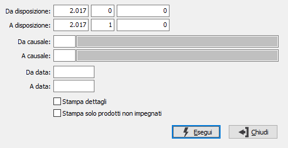

Stampa disposizioni di produzione
Il programma attiva la stampa differita o la ristampa delle disposizioni, sulla base dei parametri di selezione inseriti dall’utente.

DA DISPOSIZIONE: tre campi per contenere rispettivamente anno, serie sezionale e numero della disposizione da cui si vuole iniziare la selezione. Confermando a vuoto, la selezione inizia dalla prima disposizione compatibile con i successivi parametri.
A DISPOSIZIONE: tre campi per contenere rispettivamente anno, serie sezionale e numero della disposizione con cui si vuole concludere la selezione. Confermando a vuoto, la selezione termina con l’ultima disposizione compatibile con i successivi parametri.
DA CAUSALE: codice della causale disposizione da cui si vuole iniziare la selezione. Confermando a vuoto, la selezione inizia dalla prima causale valida. Sul campo sono attive le funzioni di ricerca (F9).
A CAUSALE: codice della causale disposizione con cui si vuole iniziare la selezione. Confermando a vuoto, la selezione termina all’ultima causale valida. Sul campo sono attive le funzioni di ricerca (F9).
DA DATA: data disposizione da cui si vuole iniziare la selezione. Confermando a vuoto, la selezione inizia dalla prima data valida.
A DATA: data disposizione con cui si vuole concludere la selezione. Confermando a vuoto, la selezione inizia dalla prima data valida.
STAMPA DETTAGLI: definisce se stampare, per ogni riga di disposizione, i dati del dettaglio (casella con segno di spunta).
STAMPA SOLO PRODOTTI NON IMPEGNATI: Definisce se stampare solo le righe relative ai prodotti che non hanno generato impegno in magazzino (casella con segno di spunta).